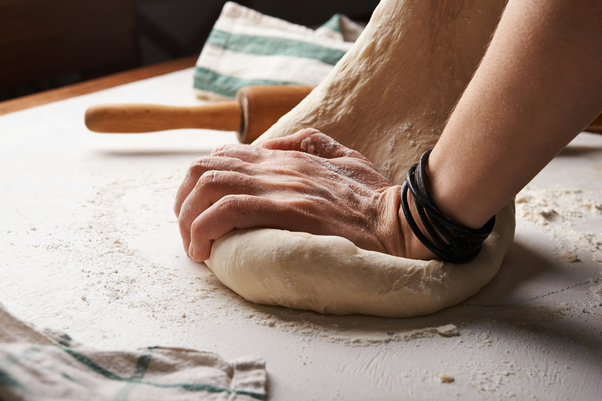
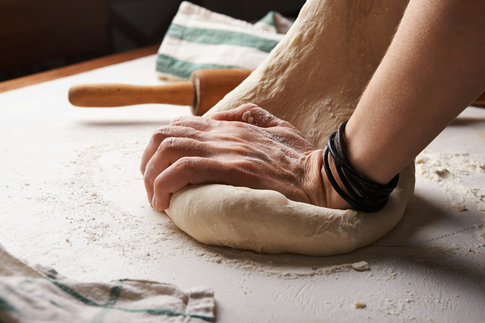

Offerings

Bread and Butter Boulangerie is committed to providing delicious, healthy, and sustainably sourced breads for bread lovers of all ages. See pricing options for loaves below, and scroll further down for a slideshow of some of our best-selling breads.
Breads and Prices
Breads on this list may not always be available depending on quantity baked. However, we aim to offer all breads shown below.
| Type of Bread | Price | Description |
|---|---|---|
| Rye | $6.50 | A dark, hard-crusted loaf with a rich flavor. |
| Sourdough | $7.50 | Classic sourdough loaf made with an aged starter. |
| French-style Baguette | $5.50 | Long, thin, and spongy loaf with a golden crust. |
| Foccaccia | $5.50 | Thick and fluffy, Italian-style flatbread. Current seasonal flavor: sundried tomato. |
| Brioche | $6.50 | Golden-brown, rich loaf with a pastry-like consistency. |
| Whole-wheat | $6.50 | Twelve-grain whole-wheat loaf made using ancient grains. |
| Ciabatta | $5.50 | Spongy, hard-crusted Italian-style loaf. |
| White | $7.50 | Sandwich-style bread perfect for toasting. Gluten free. |
| Vegan Sourdough | $7.50 | Our classic sourdough, made vegan. |

 
